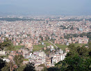

My Trip!!!!
It is a great pleasure to narrate my trip to Nepal. I travelled with a tour group as my budget allowed me to do so. But it was worth every penny spent. Since, this was a group of my friends and their families, it gave us a great flexibility of freedom to choose the entire tour itinerary. I had enjoyed my earlier vacations travelling with this group, hence it turned out to be a memorable experience in every regard.
My journey began with the flight to Kathmandu International airport. While landing, I was struck by the awesome beauty of the surroundings of the airport. The natural landscape of the airport has a peace and tranquil effect which was an incredible atmosphere to greet a stranger. From airport we reached our hotel by the chartered bus. I stayed in a decent hotel named Kathmandu Eco hotel which was situated at the heart of downtown. The city is surrounded by the Himalayan mountain and the weather was quite salubrious. The hotel staff was quite friendly and greeted us with a warm welcome. The major language is Nepalese, but English is a working language around the place and hence communication was not the problem.
The following day began with the sightseeing around the Kathmandu city and nearby places of tourist attractions. There are many small and big temples interspersed throughout the city. The architecture and style of construction leaves an everlasting impression on the visitor. There were several monasteries located in and around Kathmandu and are great places to visit. I did some local shopping for the memorabilia to take away with me. I was able to capture some beautiful images of the places I visited and will remain witness for my trip.


The next day we ventured out to see some picturesque places outside Kathmandu. These included visit to Begnas and Phewa lakes and their surrounding valleys. Both the lake are situated into the deep ravines of hindu-kush mountain ranges of Himalaya. These places create an ambience of such a peace and calmness that everyone is bound to be spellbound and awestruck by its richness of its beauty. To get the real feel of the place we hiked the surrounding valley and the mountains. We stayed in a small mountain cabin and continued quenching our thirst for the nature. The pristine beauty and tranquil left an everlasting impression on both our mind soul to come back home.